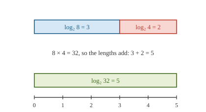

<script src="/assets/redirect.js"></script>
<section class="theory" data-section="P23-2.3">
<h2>2.3 The laws of logarithms</h2>
<p class="src">Based on Cambridge International AS &amp; A Level Mathematics: Pure Mathematics 2 &amp; 3 Coursebook (Hugh Neill, Douglas Quadling and Julian Gilbey), Chapter 2 Logarithmic and exponential functions, printed pp.33–34 (Key points 2.3–2.4, Worked examples 2.8–2.9, Exercise 2C). Own wording and new numbers. Solving logarithmic equations, beyond rewriting a simplified logarithm as a power, is left to the next subsection, as in the book.</p>
<p class="key-words"><strong>Key words:</strong> <em>laws of logarithms</em>, <em>logarithm</em></p>
<p>If \(x\) and \(y\) are positive and the base satisfies \(a\gt 0\) and \(a\neq 1\), then the following laws of logarithms may be used.</p>
<ul>
<li>Multiplication law of logarithms: \(\log_a(xy)=\log_a x+\log_a y\).</li>
<li>Division law of logarithms: \(\log_a\bigl(\dfrac{x}{y}\bigr)=\log_a x-\log_a y\).</li>
<li>Power law of logarithms: \(\log_a(x^m)=m\log_a x\).</li>
</ul>
<p>As a special case of the power law, \(\log_a\bigl(\dfrac{1}{x}\bigr)=-\log_a x\).</p>
<p>A common error is writing log x + log y as log(x + y). The first law combines a product, not a sum, inside a single logarithm.</p>
<figure>

<figcaption>The multiplication law as lengths: \(\log_2 8+\log_2 4=3+2=5=\log_2 32\), and \(8\times 4=32\).</figcaption>
</figure>
<div class="worked-example">
<h4>Worked example 1: A product that simplifies to an integer</h4>
<p class="src">Book: Worked example 2.8, p.34; new numbers chosen so the result is an integer</p>
<p>Simplify \(\log_2 40+\log_2\bigl(\dfrac{1}{5}\bigr)\).</p>
<ol class="steps">
<li>The multiplication law of logarithms gives \(\log_2\bigl(40\times\dfrac{1}{5}\bigr)=\log_2 8\). <span class="mark">M1</span></li>
<li>\(\log_2 8=\log_2(2^3)=3\). <span class="mark">A1</span></li>
</ol>
<p class="final"><strong>Answer:</strong> \(3\)</p>
</div>
<div class="worked-example">
<h4>Worked example 2: A power and a quotient</h4>
<p class="src">Book: Worked example 2.8(c) and Exercise 2C; new numbers</p>
<p>Simplify \(2\log_3 6-\log_3 4\).</p>
<ol class="steps">
<li>The power law gives \(2\log_3 6=\log_3(6^2)=\log_3 36\). Then the division law of logarithms gives \(\log_3 36-\log_3 4=\log_3\bigl(\dfrac{36}{4}\bigr)=\log_3 9\). <span class="mark">M1</span></li>
<li>\(\log_3 9=\log_3(3^2)=2\). <span class="mark">A1</span></li>
</ol>
<p class="final"><strong>Answer:</strong> \(2\)</p>
</div>
<h3>Quick check</h3>
<div class="quick-check" data-q="QC1">
<p>Simplify \(\log_2 8+\log_2 4\).</p>
<p class="final"><strong>Answer:</strong> \(5\)</p>
</div>
<div class="quick-check" data-q="QC2">
<p>Simplify \(\log_3 36-\log_3 4\).</p>
<p class="final"><strong>Answer:</strong> \(2\)</p>
</div>
<div class="quick-check" data-q="QC3">
<p>Simplify \(3\log_5 5+\log_5 25\).</p>
<p class="final"><strong>Answer:</strong> \(5\)</p>
</div>
</section>
